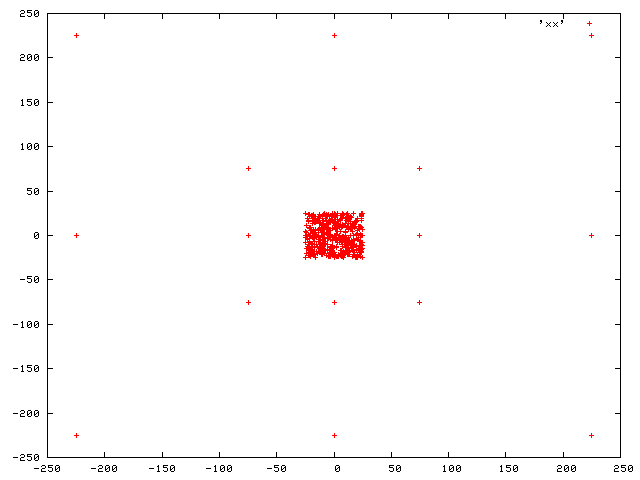
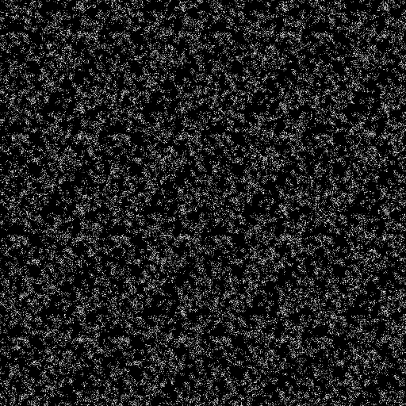
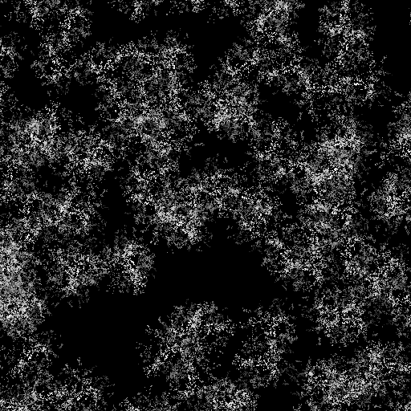
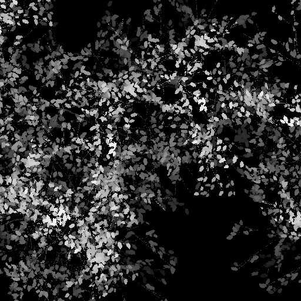
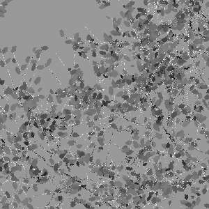
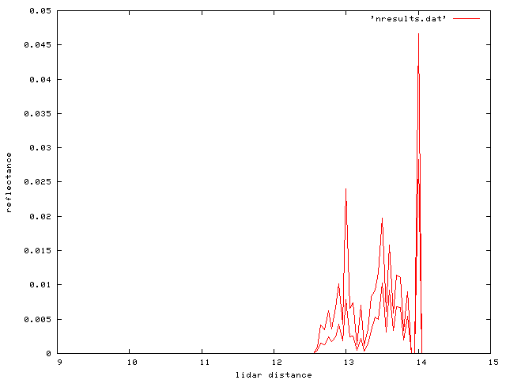

[previous]
A more realistic scenario
Beech canopy
The file shrubs.obj is a much more complex (and realistic model for simulating lidar waveforms of canopies. It uses the plant material library plants2.matlib and material files in the sub-directory refl.
We use the light file nlight.dat and the camera file ncamera.dat
First, it is worthwhile deriving a height map of the object. From inspection of the clone objects in shrubs.obj:
grep clone shrubs.obj | awk '{print $2,$3}' > clones.dat

We notice that the plants are located in a 50 m x 50 m area, so we chhoose to derive the height map of this:
echo 16 0 0 200 100 100 512 512 1 heightmapn.hips | start -v shrubs.obj

With stats:
Frame 0 : n=262144 mean=0.151 SD=0.289 Min=0.000 Max=1.299
Or looking at a smaller area:
echo 16 0 0 200 10 10 512 512 1 heightmapn1.hips | start -v shrubs.obj

Or further still:
echo 16 0 0 200 2 2 512 512 1 heightmapn2.hips | start -v shrubs.obj

The camera and light are at 7 m above the ground, and the canopy height is 1.28 m.
We run with:
echo 14 ncamera.dat nlight.dat | start -v -black -sensor_waveband wavebands.dat shrubs.obj

The plot below shows the waveforms for the two wavelengths specified.

[previous]